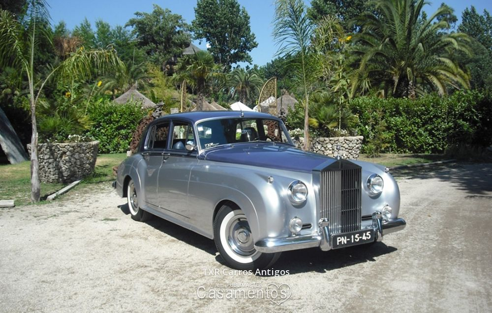

Os vários modelos de carros antigos.
As várias marcas de carros antigos.
As várias marcas de carros antigos.
link

As várias marcas de carros antigos.
link
A marca de carros mais antigas é a Peugeeot e foi fundada em 1803 por Jean-Pierre e Jean-Frédéric Peugeote.
Go somewhere
O modelo de Dion Runabout de 1884 tem 127 anos de idade e está avaliado num valor de 8 milões de dólares.
Go somewhereO primeiro carro desportivo alguma vez produzido dá pelo nome de Vauxhall Price Henry Sports Torpedo e foi produzido em 1914.
Go somewhere
O carro fabricado a pedido de Adolf Hittler foi nomeado de Mercedes-Benz 70K Grosser Offener Tourenwagen de 1939, que foi desenhado e produzido de propósito para ele.
Go somewhereO nome do primeiro carro de sucesso da Ferrari é intitulado de Ferrarri 125 S e criado no ano de 1947.
Go somewhereO carro da década de 1930 foi considerado o melhor carro de sua época, e tem o nome de Duesenberg SSJ e só existem dois exemplares deste modelo no mundo.
Go somewhere